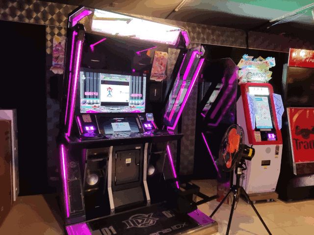
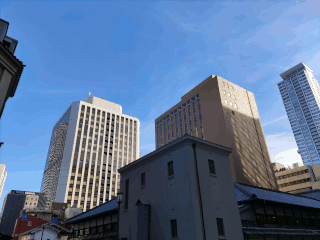

1日に何個メロンパンを食うと
苦行になるのかin大阪
あなたは[2][1][4][7][4][8][3][6][4][7]人目の訪問者ですこの記事は苦行またはメロンパン Advent Calendar 2024の1日目です。
こんにちは、UEC徒歩部の名付け親です。
このブログ公開時点で名前がついてから丁度4周年
時の流れは残酷なまでに早いもので、UEC徒歩部の中心となって活躍していた
つまみ（@trpfrog）が間もなく卒業しようとしています。
UEC徒歩部の活動も下火になっていく中、名付け親として
最後のドベカレ、UEC徒歩部の名が生まれたこの日に公開させていただきます。
あれ？つまみさん今年度卒で合ってるよね？
さてここからはタイトルにある通り苦行とメロンパンをします。
概要は以下の通り。
8.大阪日本橋からスタートし、梅田まで北上する。（距離約5.3km）
1.道中で見つけたベーカリーでメロンパンを購入し、食べる。
0.梅田駅に到着する、もしくは救急搬送された時点で終了する。
ネタバレ 今回の徒歩ルート
11月某日 大阪日本橋
西の秋葉原とも呼ばれる電気街。とはいえ秋葉原と比べると規模は半分程度。
そして秋葉原と同様、若干寂れて来てカード屋が出しゃばってきてます。
これでも昔より治安は良くなった方です。写真左に映る東横INNのある場所は
昔マジコンと草売ってるテントが立ち並んでました。 カード屋もいずれ同じ運命を辿る

ハンドウォーマー
メロンパン奇行はここオタロードから始まります。
通行人が映らないようにカメラを上めにしたら画角キモくて泣いちゃった
メロンパン①
アルテリアベーカリー プレーンメロンパン 230円
オタロードを北上し難波駅方面へ向かいます。
来てくれてありがとう
来てくれてありがとう
帰れ
1杯500円のオレンジジュース自販機と1本100円の自販機
なんば駅前の人が多い通り。でも道を1本横にズレるだけで…
一瞬で人通りの少ないディープな路地に変わる。この雰囲気好き
メロンパン②
シャンピニオン メロンパン 200円
指定暴力団 花月組
なんばグランド花月の横を通って道頓堀へ北上していきます。
そうなんだ
店長も苦行ドベカレ書いてね

EMERALDAS（千日前ラウンドワン）
10円パンなる謎のパンが500円で売ってますが、
今回はメロンパン縛りなのでスルーします。
進みます。
かに道楽先輩
メロンパン③
道頓堀No.1 メロンパン 400円
道頓堀。"大阪らしさ"を目一杯詰め込んだような場所ではあるが如何せん人が多い。
団体旅行なんかでこの辺の飯屋を予約している場合以外はお勧めできる場所ではないです
ちゃんさぶ
この辺から口がやたらネチャついて普通に不快になってます。茶が飲みたい
飲み屋街の細い路地を抜けて北上します。
迷路みたいな構造の建物に密集する店舗
情報過多で下水臭く、そして昼は眠ったように静かな迷宮
良い建物
心斎橋近辺。
この辺まで来ると景色もバーの多い低層ビルからオフィス街の中層ビル中心に変わる。
進みます。
徒歩部の敵
ア！
メロンパン④
き多や ミニメロンパン（紅茶） 180円
普通のメロンパンが売ってなくてミニメロンパンしかなかったです
この辺からだいぶ調子が悪くなってきました。先人の言ってたことが既に起きてます。
糖と炭水化物の塊でカロリーはあるのに栄養が全くないバケモンみたいな食い物なので
満腹中枢がバグって何か食いたいのに何も入らない状態。
タンパク質とかがないとやってられないけどメロンパン以外はレギュレーション違反なので
道中の自販機で野菜ジュースを飲みまくってなんとかしています。（液状ならセーフ理論）
ここから少し寄り道。途中に面白い建物があるので"通って"みます。
固定相場制度の崩壊
中央大通近辺。この辺になると敷地面積の大きい中層ビルが多くなります。
船場センタービルです。阪神高速の下に建てられた全長1kmのビル内部は
7割が布の問屋といういわば繊維商品の秋葉原ともいうべき建物。
内部もちょっと古いショッピングモールという感じで趣があります。８番出口みたい
そしてこのビルの2階は道路を跨いでいるので実質歩道橋です。ノルマ達成
途中でビルを出て商店街を歩いていきます。大阪は商店街も多いです
ア！
メロンパン⑤
パン工房KAWA チョコチップメロン 194円
ここからは御堂筋を通って北上し、梅田へ向かいます。

この辺は大手企業の入った高層ビルが立ち並ぶオフィス街。
1階のテナントもランボルギーニとかになってます
中之島近辺。ここだけは特別な区画で、
日本銀行や市役所などの特殊な建造物が集中しています。
中央公会堂。大阪人の「中央」の発音は特殊で、
野獣先輩が自宅を指差した時と同じく「中↑央↓」です

大阪市役所
を牛耳ってるバケモン
さて、このあたりで強烈な眠気が襲ってきました。
メロンパンという高カロリー・高炭水化物の塊を1時間で5個も食べたので
血糖値スパイクが発生して"至って"ます。以降梅田に着くまで眠気との格闘です。
PR
ドカ食いダイスキ！ もちづきさん
やたら警備が多いなと思ったら米国総領事館らしいです。トランプ再選直後だし仕方ないね
ウワー！歩道橋
参道の為にどてっぱら開けられてるビル
梅田近辺の景色。このへんはもうHUGE BUILDINGばかりで東京とあまり変わりません。
しかし逆に言うと東京のようなビル街が梅田くらいしかないのが大阪です。
阪 急
梅田迷宮入口。ここでタイマーストップです。
総評
メロンパンは3個食ったあたりから苦行が始まる
もう二度とやらん
あ、あとおいでよ大阪。東京よりは人少なくて住みやすいよ
要望あれば高画質版も検討します ＊←このサイトはアナルティクスを使用しています。